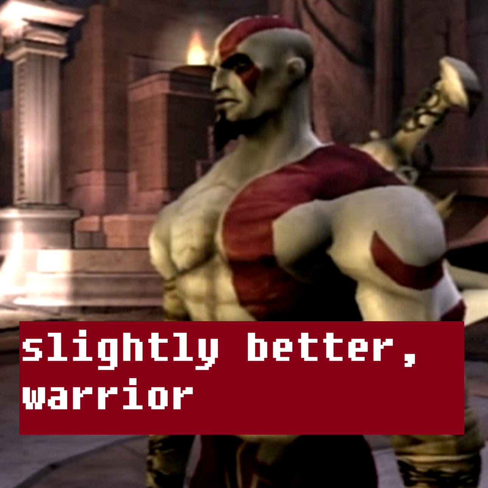
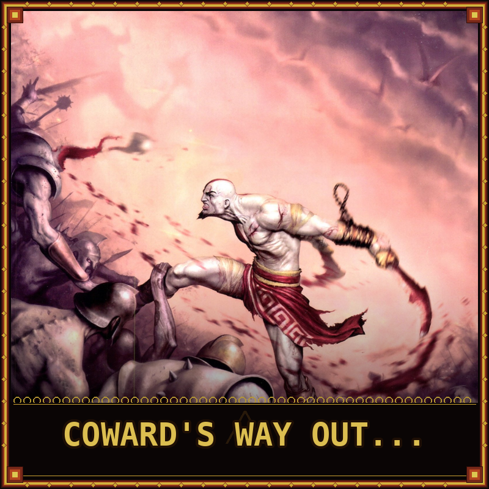
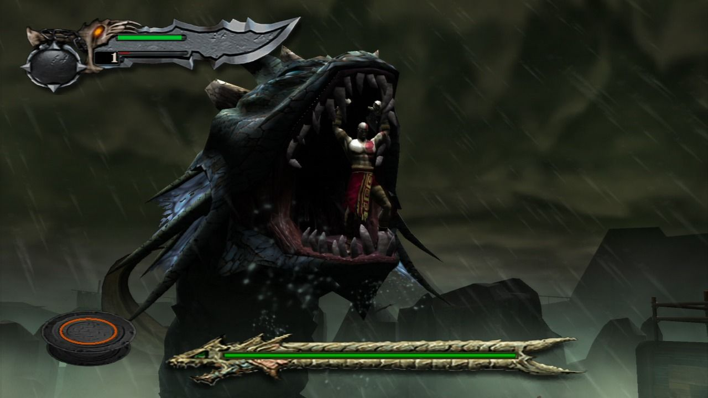
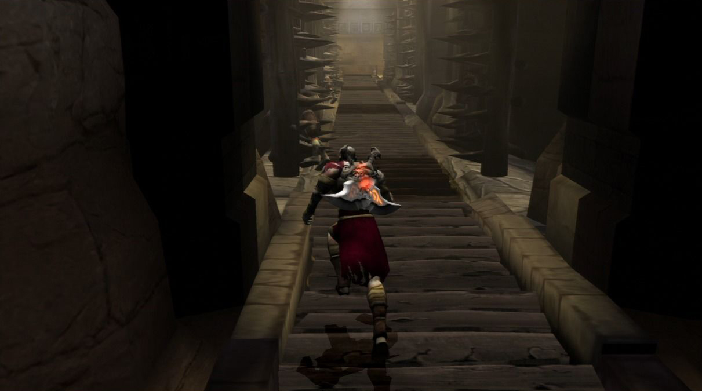
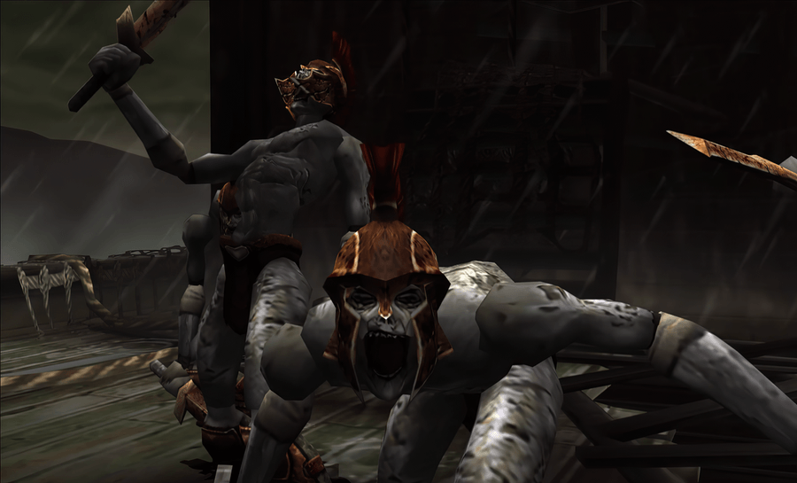
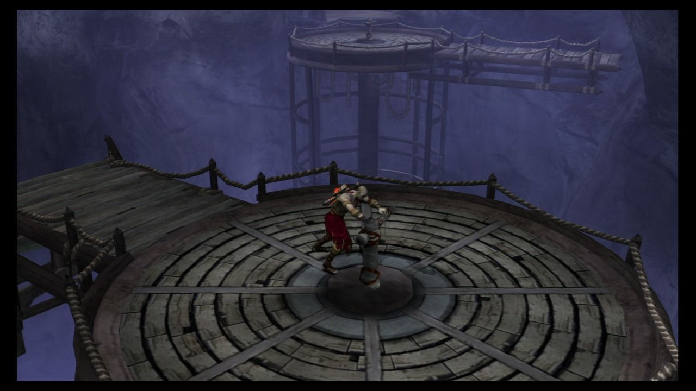

God of War
An action-adventure game set in ancient Greece with vengeance as its central theme. You play as Kratos, a Spartan warrior wielding the Blades of Chaos, on a quest to kill Ares, the God of War. The game features combo-based combat, challenging boss fights, environmental puzzles, and platforming through mythological settings. Widely regarded as one of the greatest action-adventure games ever made.
.png)
| Platform | Sony PlayStation 2 |
|---|---|
| Genre | Action-Adventure |
| Released | |
| Developer | Santa Monica Studio |
| Publisher | Sony Computer Entertainment |
| Available | PS2, PS3 (remastered), PS Vita, PS Now |
Where to Play
About This Game
God of War was the brainchild of David Jaffe at Sony's Santa Monica Studio, released in 2005 for the PlayStation 2. Jaffe wanted to create an action game steeped in Greek mythology that felt cinematic without sacrificing gameplay depth. The team studied films like Clash of the Titans and Jason and the Argonauts, building a world where players could rip apart mythological creatures with their bare hands. The iconic Blades of Chaos—chained weapons that whip in wide arcs—were designed to make combat feel fundamentally different from the lock-on systems popularized by Devil May Cry.
The game was a massive commercial and critical success, selling over 4.6 million copies on PS2 alone and spawning a franchise that would span multiple console generations. Its seamless blend of brutal combat, environmental puzzles, and cinematic set pieces set a new standard for action games. The opening Hydra battle remains one of gaming's most memorable introductions, throwing players into an epic confrontation before they've even learned all the controls.
Did You Know?
- The Blades of Chaos were a last-minute design — Kratos originally wielded a single sword. Director David Jaffe pushed for chained blades after feeling the combat lacked a unique identity, and the team prototyped the swinging mechanic in just two weeks.
- The Hydra battle was built first — Santa Monica Studio created the opening boss fight before almost anything else in the game. It served as the vertical slice to pitch the project internally at Sony and secure full production funding.
- Kratos almost looked completely different — Early concept art explored many different looks, including a younger, unscarred warrior. The signature ash-white skin and red tattoo came from the game's own mythology — Kratos is the "Ghost of Sparta," cursed to wear the ashes of his dead wife and daughter fused to his skin.
- A technical showcase on PS2 — Santa Monica Studio built a custom engine that aggressively managed draw calls and memory to push the PS2 hardware further than most titles. The result was one of the most visually impressive PS2 games at the time, with massive boss encounters and seamless camera work.
Critical Reception
Accolades
- #18 Best PS2 Game of All Time — IGN, 2010
- Game of the Year AIAS Interactive Achievement Awards — DICE, 2006
- 94/100 Metacritic score — Metacritic, 2005
Club Achievements

Beat Game on Normal
Gold
Beat Game on Easy
SilverSpeedrun Records
God of War has an active speedrunning community that exploits collision glitches, infinite jump techniques, and precise menu timing to tear through the game at incredible speed.
Soundtrack
Composed by Gerard Marino, Ron Fish, Winifred Phillips, Mike Reagan & Cris Velasco
The score blends orchestral grandeur with ancient instrumentation to match the game's mythological scale. Recorded with a full orchestra, the soundtrack shifts between thunderous battle themes and haunting ambient passages, punctuated by choral vocals that evoke Greek tragedy. Gerard Marino's main theme has become iconic in gaming.
Notable Tracks
- The Great Sword Bridge of Athena
- Kratos and the Sea
- The Rings of Pandora
- Minotaur Boss Battle
- Temple of the Oracle
- Main Theme (God of War)
Screenshots




Screenshots via LaunchBox Games Database
Sources & Attribution
- Game description and historical background adapted from Wikipedia
- Trivia sourced from Giant Bomb and God of War Wiki
- Review scores from IGN, GameSpot, and Famitsu
- Accolades from IGN, DICE Awards, and Metacritic
- Speedrun data from Speedrun.com
- Playtime estimates from HowLongToBeat
- Screenshots and box art via LaunchBox Games Database
- Soundtrack information from KHInsider
- Pricing data from PriceCharting